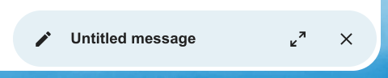

Prioritert innboks har 2 seksjoner Viktig og Andre. Meldinger blir automatisk merket som viktige basert på hvilke meldinger du samhandlet med eller merket som viktige. I begynnelsen må du kanskje manuelt endre viktigheten for å lære systemet, men det vil forbedre seg over tid.
At the top of the envelope list in any mail layout, there is a search field shortcut for searching email subjects. Starting from version3.7, this shortcut allows you to search by subject, recipient (to), or sender (from) by default.
When you add your first recipient or contact in the «To» field, a right pane will appear displaying the saved profile details of that contact.
Adding a second contact will collapse the list, allowing you to select and expand any contact you added to view their details.
If you prefer to focus solely on writing in the composer, you can hide the right pane by clicking the expand icon in the top-right corner.
To show the right pane again, simply click the minimize icon in the same location.
You can mention contacts in your message by typing @ and then selecting the contact from the list.
By doing so the contact will be automatically added as a recipient.
Merknad
Only contacts with a valid email address will be suggested.
Skrivevinduet kan minimeres mens du skriver en ny melding, redigerer et eksisterende utkast eller redigerer en melding fra utboksen. Bare klikk på minimeringsknappen øverst til høyre på vinduet eller klikk hvor som helst utenfor vinduet.
Du kan gjenoppta den minimerte meldingen ved å klikke hvor som helst på indikatoren nederst til høyre på skjermen.

Trykk på lukkeknappen på skrivevinduet eller indikatoren nederst til høyre for å slutte å redigere en melding. Et utkast lagres automatisk i utkastpostkassen.
When a message has been composed and the «Send» button was clicked, the message is added to the outbox which can be found in the bottom left corner of the left sidebar.
You can also set the date and time for the send operation to a point in the future (see Scheduled messages)- the message will be kept in the outbox until your chosen date and time arrives, then it will be sent automatically.
The outbox is only visible when there is a message waiting to be handled by the outbox.
You can re- open the composer for a message in the outbox any time before the «send»- operation is triggered.
Merknad
When an error occurs during sending, three error messages are possible:
Could not copy to «Sent» mailbox
The mail was sent but couldn’t be copied to the «Sent» mailbox. This error will be handled by the outbox and the copy operation will be tried again.
Mail server error
Sending was unsuccessful with a state than can be retried (ex: the SMTP server couldn’t be reached). The outbox will retry sending the message.
Message could not be sent
Sending might or might not have failed. The mail server can’t tell us the state of the message. Since the Mail app has no way to determine the state of the message (sent or unsent) the message will stay in the outbox and the account user has to decide how to proceed.
Upon creating a tag, a randomly assigned color is automatically chosen. Once the tag is saved, you have the flexibility to customize its color according to your preferences. This feature can be found on the Tag modal action menu.
Noen e-postlister og nyhetsbrev tillater å bli avmeldt enkelt. Hvis Mail-appen oppdager meldinger fra en slik avsender, vil den vise en Avslutt abonnement-knapp ved siden av avsenderinformasjonen. Klikk og bekreft for å avslutte abonnementet på listen.
Når du slumrer en melding eller tråd, flyttes den til en dedikert postboks til den valgte utsettelsesdatoen er nådd og meldingen eller tråden flyttes tilbake til den opprinnelige postboksen.
Åpne handlingsmenyen for en konvolutt eller tråd
Klikk Slumre
Velg hvor lenge meldingen eller tråden skal slumres
When you open a message in the Mail app, it proposes AI-generated replies. By simply clicking on a suggested reply, the composer opens with the response pre-filled.
Merknad
Please note that the feature has to be enabled by the administrator
Merknad
Supported languages depend on the used large language model
The mail app supports summarizing message threads that contain 3 or more messages.
Added in version 3.4.
Merknad
Please note that the feature has to be enabled by the administrator
Merknad
Please note that this feature only works well with integration_openai. Local LLMs take too long to respond and the summary request is likely to time out and still create significant system load.
Added in version 3.5: Autoresponder can follow system settings.
The autoresponder is off by default. It can be set manually, or follow the system settings. Following system settings means that the long absence message entered on the Absence settings section is applied automatically.
The Mail app will automatically remind you when an outgoing email did not receive a response.
Each sent email will be analyzed by an AI to check whether a reply is expected.
After four days all relevant emails will be shown in your priority inbox.
When clicking on such an email a button will be shown to quickly follow up with all recipients.
It is also possible to disable follow-up reminders for a sent email.
Merknad
Please note that the feature has to be enabled by the administrator.
The Mail app will check for potential phishing attempts and will display a warning to the user.
The checks are the following:
The sender address saved in the addressbook is not the same as the one in the mail account
The sender is using a custom email address that doesn’t match the from address
The sent date is set in the future
Links in the message body are not pointing to the displayed text
The reply-to address is not the same as the sender address
Merknad
Please note that the warning does not mean that the message is a phishing attempt. It only means that the Mail app detected a potential phishing attempt.
The Mail app allows adding internal addresses and domains, and will warn the user if the address is not in the list, when sending and upon receiving a message.
To add an internal address:
Open the mail settings
Navigate to Privacy and security section
Enable the internal addresses by ckicjin on the checkbox